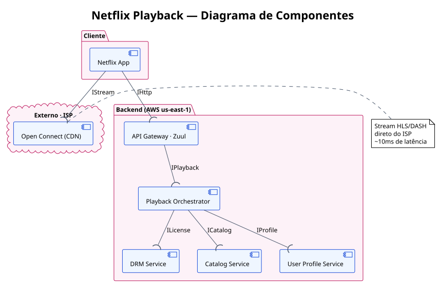
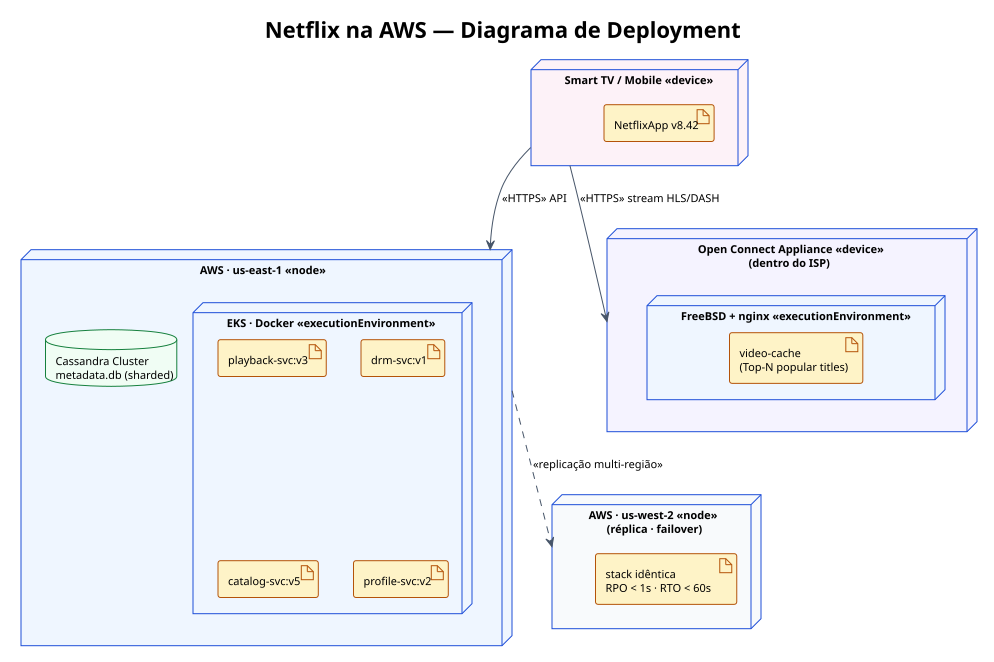
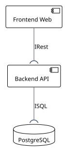
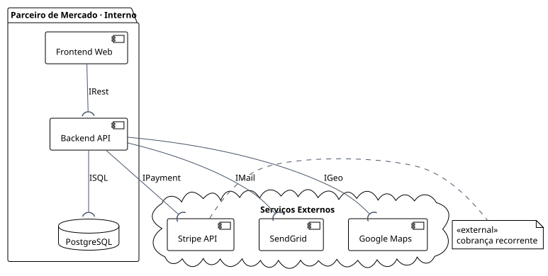

📑 Sumário
- Objetivos da aula
- O dia em que a Netflix parou (agosto/2008)
- ISO/IEC 25010 — a régua de qualidade em 8 eixos
- Como a Netflix transformou cada eixo em ação concreta
- SOA — Service-Oriented Architecture
- Os 8 princípios SOA de Thomas Erl
- Monolito × SOA × Microsserviços
- UML de Componentes — anatomia da notação
- Diagrama de Componentes — exemplo Netflix Playback
- UML de Deployment — anatomia da notação
- Diagrama de Deployment — exemplo Netflix na AWS
- RNF mensurável — transformando desejo em SLA
- Vinculando RNF ao componente responsável
- Atividade ponderada — descrição completa
- Barema detalhado (10 pontos)
- PlantUML passo a passo
- Checklist de entrega
- Armadilhas comuns (e como evitar)
- Referências e leituras complementares
1. Objetivos da aula
Ao final da aula você sabe ler, desenhar e justificar arquiteturas — e transformar "tem que ser bom" em SLA mensurável.
A aula 3 fecha a primeira parte do módulo: como decidir a forma do sistema antes de escrever a primeira linha de banco de dados. Os objetivos específicos são:
- Reconhecer os sintomas de um monolito em escala e o tipo de problema que SOA resolve.
- Dominar os 8 eixos da ISO/IEC 25010 e usá-los como checklist para escrever requisitos não funcionais (RNFs).
- Aplicar os 8 princípios SOA de Thomas Erl para decidir o que vira serviço e o que continua junto.
- Diferenciar Monolito, SOA e Microsserviços e escolher a granularidade certa pelo contexto.
- Ler e desenhar diagramas UML de componentes (lollipop, socket, ball-and-socket, portas).
- Ler e desenhar diagramas UML de deployment (node, device, execution environment, artifact, manifest).
- Escrever um RNF mensurável com SLA e categorizá-lo na ISO 25010.
- Vincular cada RNF ao componente responsável por sustentá-lo.
- Entregar a atividade ponderada: diagrama de componentes do parceiro + 5 RNFs justificados.
📌 Pré-requisito de chegada: as 4 leituras obrigatórias dos autoestudos (RNFs em SOA, TOGAF, UML deployment, Layers of SOA Reference Architecture) e 1 dúvida concreta para o daily. Sem isso, a ponderada de 90 min fica difícil.
2. O dia em que a Netflix parou — agosto/2008
Toda decisão arquitetural relevante começa com uma dor. A da Netflix tem data: 11 de agosto de 2008.
Em agosto de 2008, a Netflix ainda era principalmente uma empresa de aluguel de DVDs por correio. O sistema rodava em um datacenter próprio, em uma aplicação monolítica: um único processo grande, um único banco de dados central, vários times trabalhando no mesmo repositório. Tudo subia junto, tudo escalava junto e — como descobriram naquela semana — tudo parava junto.
O banco de dados central foi corrompido. O serviço de envio de DVDs ficou paralisado por três dias. Zero entregas. Foi o suficiente para a engenharia tomar duas decisões em sequência que levariam aproximadamente sete anos para se concluir:
- Sair do datacenter próprio e migrar tudo para a AWS.
- Quebrar o monolito em centenas de serviços independentes, isolados por domínio.
Hoje qualquer serviço da Netflix pode cair — recomendação, busca, perfil — sem derrubar o catálogo nem o playback. Antes, qualquer falha derrubava a empresa.
2.1 Os 4 sintomas do monolito que dispararam a virada
O incidente foi o gatilho, mas a doença era estrutural. Quatro sintomas, presentes em qualquer monolito grande:
🚀 Deploy bloqueia o time. Mudou uma linha do checkout? Sobe a aplicação inteira. A janela de deploy semanal vira gargalo de todos os squads, porque cada release precisa esperar a fila.
📈 Escala tudo ou nada. Se o módulo de busca está saturado, você sobe todo o monolito. Não dá para escalar só a parte que precisa. O custo de infraestrutura cresce sem precisão e sem proporção.
👥 Times se atropelam. Cinco squads no mesmo repositório significa merge conflicts diários, code reviews atravessadas, branches longas e medo de mexer no código alheio.
🔥 Falha em cascata. Um bug no recommender derruba o login. Sem isolamento de processo, qualquer exceção tem o potencial de tombar o servidor inteiro — e com ele todos os módulos.
2.2 A pergunta que ficou pós-trauma
Resolver o problema não era só "quebrar o monolito". Era preciso medir se o sistema novo era, de fato, melhor. Latência caiu? Disponibilidade subiu? Um deploy individual ficou mais rápido? E aí entra a próxima seção: a ISO/IEC 25010 — a norma internacional que transforma intuição arquitetural em número auditável.
🪜 Ponte para a próxima seção: a Netflix não escolheu "vou fazer um sistema bom". Escolheu, por eixo de qualidade, uma ação técnica observável com SLA. É exatamente o que a ponderada de hoje pede para o seu projeto: 5 RNFs, 5 SLAs, 5 ações de arquitetura.
3. ISO/IEC 25010 — a régua de qualidade em 8 eixos
A ISO/IEC 25010 é a norma internacional que define o que é "qualidade de software". Oito categorias, mensuráveis, ortogonais.
Quando alguém pede um sistema "rápido, seguro e fácil de manter", está dizendo três coisas diferentes que entram em três eixos diferentes da ISO 25010. A norma serve como um vocabulário comum entre cliente, produto, arquitetura e dev — e como um checklist para garantir que nenhuma dimensão de qualidade ficou esquecida.
Cada um dos 8 eixos abaixo tem subcaracterísticas e métricas próprias. Aqui apresentamos o eixo, o que ele cobra e um exemplo de SLA mensurável que você pode usar como ponto de partida na ponderada.
Faz o que diz que faz: completude (cobre todos os casos de uso), correção (resultado correto) e adequação (atende ao objetivo do usuário).
Exemplo SLA: cobertura ≥ 95% dos use cases priorizadosTempo de resposta, throughput (req/s) e uso de recurso (CPU, memória, banda) sob uma carga conhecida. Sem carga definida, não há performance — só anedota.
Exemplo SLA: latência p99 < 300 ms na rota /recomendar com 200 req/sCoexistência (não atrapalha outros sistemas no mesmo ambiente) e interoperabilidade (consegue trocar dados via formatos e protocolos padronizados).
Exemplo SLA: API REST/JSON compatível com OpenAPI 3.0Aprendizagem, operabilidade, proteção contra erro do usuário, estética, acessibilidade. É o que o usuário sente — e o que faz a diferença entre cancelar e renovar.
Exemplo SLA: SUS ≥ 75 / WCAG 2.1 AA em todas as telas críticasMaturidade (MTBF), disponibilidade (uptime), tolerância a falhas (continua respondendo mesmo com componente fora) e recuperabilidade (RPO/RTO em caso de desastre).
Exemplo SLA: uptime ≥ 99,9% (no máximo 8h45 indisponível por ano)Confidencialidade, integridade, não-repúdio, autenticidade e accountability. Sem segurança quantificada, é só boa intenção.
Exemplo SLA: OWASP Top-10 mitigado e auditado a cada releaseModularidade, reusabilidade, analisabilidade, modificabilidade e testabilidade. É o que protege o futuro do código e a sanidade do time.
Exemplo SLA: cobertura de testes ≥ 80% das linhas críticasAdaptabilidade (roda em diferentes ambientes), instalabilidade (sobe e desce com facilidade) e substituibilidade (pode ser trocado por equivalente).
Exemplo SLA: empacotamento Docker seguindo princípios 12-factor📏 Regra de ouro: RNF sem número não é RNF — é desejo. Toda categoria precisa virar SLA mensurável. "Tem que ser rápido" ❌ → "p99 da rota /recomendar < 300 ms com 200 req/s" ✅.
💡 Como usar na ponderada: use os 8 eixos como checklist. Para cada um, pergunte "qual é o RNF crítico para o meu parceiro?". Cinco respostas bem fundamentadas valem mais que oito superficiais.
4. Netflix × ISO 25010 — 8 eixos, 8 ações concretas
Cada eixo da ISO virou uma decisão técnica observável. É exatamente o nível de concretude que a ponderada cobra.
A tabela abaixo mostra como a Netflix transformou cada um dos 8 eixos da ISO 25010 em uma decisão arquitetural específica. Note que nenhuma é "vou ser melhor" — todas são ações com nome próprio.
| Eixo ISO 25010 | Ação concreta da Netflix | Por que faz a diferença |
|---|---|---|
| 🎯 Functional Suitability | Algoritmo de recomendação personalizado · Netflix Prize (US$ 1M, 2009) | Concurso público para melhorar 10% o RMSE de recomendação. Quando "fazer o que diz que faz" é o produto, vira ciência aberta. |
| ⚡ Performance Efficiency | Open Connect · CDN proprietária dentro de ISPs do mundo todo | Em vez de servir vídeo da AWS, a Netflix coloca caches físicos no provedor do usuário. A latência cai de ~200ms para ~10ms. |
| 🔌 Compatibility | App em 1700+ tipos de dispositivo · TVs, consoles, mobile, set-top boxes | Camada de adaptação por dispositivo. Mesma API por trás, encoders e UIs diferentes por display. Roda em TV de 2012. |
| 👤 Usability | "Skip Intro", autoplay, capa adaptativa por perfil, preview animado | Cada decisão de UX é A/B testada com milhões de usuários. Engaja sem exigir aprendizado — tela vazia é mais um clique até cancelar. |
| 🛡️ Reliability | Chaos Monkey · derruba serviços em produção de propósito | Se o sistema sobrevive a falhas aleatórias diárias, sobrevive a um datacenter caindo. Resiliência testada, não esperada. |
| 🔒 Security | DRM por título · TLS em tudo · zero-trust interno (estilo BeyondCorp) | Cada arquivo de vídeo tem chave de descriptografia única, gerenciada por serviço dedicado. Vazamento de uma chave ≠ vazamento do catálogo. |
| 🛠️ Maintainability | ~700 microsserviços independentes · deploys >1000×/dia | Cada time deploya quando quer. Sem ciclo mensal, sem release coordenado. Bug = revert sem afetar o resto. |
| 📦 Portability | Tudo em containers AWS · multi-região · multi-AZ · imagens imutáveis | A imagem Docker é a unidade. Subir nova região é replicar a stack — não reinstalar. Em 2008 isso simplesmente não existia. |
💡 A lição: arquitetura é decisão sobre quem fala com quem, sob qual contrato, com qual SLA. Sem números, sem decisão. Sua ponderada pede o mesmo movimento: 5 eixos da ISO → 5 RNFs com SLA → 5 componentes do diagrama responsáveis por sustentar cada um.
5. SOA — Service-Oriented Architecture
SOA não é tecnologia, é estilo arquitetural. Define como serviços de negócio se comunicam por contratos públicos.
SOA (Service-Oriented Architecture) é um estilo arquitetural em que a aplicação é decomposta em serviços — unidades autônomas, com contrato público e responsabilidade clara — que se comunicam por mensagens. Cada serviço encapsula uma capacidade de negócio (não uma função técnica): "gestão de pedidos", "catálogo de produtos", "autenticação", "cobrança".
SOA emergiu na década de 2000 como resposta ao problema dos monolitos corporativos: integrações ponto-a-ponto, dependências cruzadas, dificuldade de evolução. A receita central:
- Serviços de negócio em vez de bibliotecas internas — cada serviço pode ser desenvolvido, implantado e versionado de forma independente.
- Contratos públicos (REST, gRPC, eventos) em vez de chamadas internas — quem consome só conhece a interface.
- Comunicação por mensagens em vez de chamadas in-process — pode ser síncrono (REST/gRPC) ou assíncrono (filas, eventos).
- Governança central de catálogo, segurança e versionamento — para evitar caos quando o número de serviços cresce.
5.1 Por que ainda falamos de SOA em 2026
Microsserviços é, em essência, uma evolução de SOA com granularidade menor e foco em autonomia de time. Mas SOA continua relevante por três motivos:
- Vocabulário base. Os 8 princípios de Erl (próxima seção) são a referência canônica do que distingue uma arquitetura orientada a serviços de uma simples coleção de APIs.
- Granularidade intermediária. Para muitos projetos, "serviços de negócio médios" é a granularidade certa — nem monolito nem 700 microsserviços.
- Integração com legado. SOA é o padrão para conversar com sistemas antigos via ESB (Enterprise Service Bus) ou API Gateway — situação comum em parceiros de mercado reais.
📚 Fontes canônicas: Thomas Erl (Service-Oriented Architecture: Concepts, Technology, and Design) define os 8 princípios que vamos ver a seguir. O TOGAF e a OASIS publicam arquiteturas de referência (camadas, papéis, governança). IBM, AWS e Microsoft mantêm cada uma sua "visão" de SOA — três leituras obrigatórias dos autoestudos.
6. Os 8 princípios SOA de Thomas Erl
As regras que separam "tenho serviços" de "tenho arquitetura SOA de verdade".
Cada princípio abaixo é, na prática, uma pergunta de revisão que você deve fazer ao seu próprio diagrama. Se a resposta for "não", o serviço provavelmente está mal desenhado.
1. Loose Coupling — Acoplamento Fraco
Serviços minimizam dependências entre si. Mudança interna em um serviço não pode quebrar quem o consome. Pergunta: "se eu refatorar o banco interno do serviço A, o serviço B precisa saber?". Se sim, está acoplado demais.
2. Service Contract — Contrato Padronizado
Comunicação acontece exclusivamente pelo contrato público (REST com OpenAPI, gRPC com .proto, eventos com schema). Sem atalhos, sem acessar tabela do outro, sem ler arquivo do outro. O contrato é a fronteira.
3. Autonomy — Autonomia
O serviço controla seu próprio ambiente, seus próprios dados e suas próprias decisões. Falha local fica local — não derruba os vizinhos. Escolha de tecnologia interna não exige aprovação dos outros times.
4. Statelessness — Sem Estado
O serviço não guarda contexto entre chamadas. Cada requisição traz tudo que precisa para ser processada. Estado fica em armazenamento dedicado (BD, cache, fila). Resultado: escala horizontal trivial — basta subir mais réplicas.
5. Reusability — Reusabilidade
Lógica de negócio é empacotada para ser reutilizada por múltiplos consumidores. "Cálculo de frete" não vive no checkout — vive em um serviço próprio que checkout, marketplace, app mobile e parceiros consomem.
6. Composability — Composição
Serviços compõem fluxos maiores via orquestração (um maestro chama os outros) ou coreografia (cada um reage a eventos). Um pedido pode envolver 7 serviços trabalhando juntos sem nenhum saber da existência dos outros 6.
7. Discoverability — Descoberta
Metadados (endpoints, contratos, versões) são publicados em catálogo, gateway ou registry. O cliente acha o serviço sem precisar de código compartilhado nem configuração hard-coded.
8. Abstraction — Abstração
Esconde a implementação. Só o contrato é público. O interno (linguagem, banco, framework, algoritmo) pode mudar a qualquer momento — desde que o contrato continue sendo cumprido.
📚 Fonte canônica: Thomas Erl · Service-Oriented Architecture: Concepts, Technology, and Design · Prentice Hall. Os 8 princípios são a referência mais citada do estilo SOA.
7. Monolito × SOA × Microsserviços
Não é uma escala "ruim → bom". São três respostas para problemas de escala diferentes.
Os três estilos resolvem o mesmo conjunto de problemas (deploy, escala, time, falhas, dados) em granularidades diferentes. A escolha depende do tamanho do time, da maturidade em DevOps, do volume de tráfego e de quanto você precisa evoluir cada parte de forma independente.
| Dimensão | Monolito | SOA | Microsserviços |
|---|---|---|---|
| Granularidade | Aplicação única | Serviços de negócio (médios) | Serviços pequenos · 1 capacidade cada |
| Comunicação | Chamadas in-process | ESB / gateway · SOAP / REST | REST / gRPC + mensageria |
| Deploy | Tudo de uma vez | Por serviço (com governança central) | Independente por serviço |
| Equipe | 1 time grande no mesmo repositório | Times por domínio + arquiteto central | Two-pizza teams autônomos |
| Falhas | Em cascata · pode tombar tudo | Isoladas (com circuit breaker) | Isoladas + bulkhead obrigatório |
| Dados | 1 banco compartilhado | Bancos por serviço (com governança) | Database-per-service rígido |
| Custo operacional | Baixo no início, alto na escala | Médio · governança paga conta | Alto · precisa de DevOps maduro |
7.1 Quando cada estilo faz sentido
🟥 Monolito ainda vale quando: equipe ≤ 6 devs, domínio único, MVP em validação, time com pouca experiência em DevOps, infra modesta. Não quebre o que ainda não cresceu.
🟦 SOA é o ponto certo quando: múltiplos canais (mobile, web, parceiros) consumindo as mesmas regras, integração com legado, governança forte, times organizados por domínio de negócio.
🟩 Microsserviços compensam quando: tráfego massivo, autonomia total por squad, maturidade em CI/CD, observabilidade plena, política de fronteira bem definida (database-per-service, bulkhead, circuit breaker).
🎯 Para a ponderada: a maioria dos parceiros do Inteli cabe em SOA — granularidade média, integração com sistema legado e/ou APIs externas, time pequeno, governança simples. Não é obrigatório usar microsserviços para "parecer moderno".
8. UML de Componentes — anatomia da notação
Cinco símbolos. Aprenda esses cinco e você lê (e desenha) qualquer diagrama de componentes.
O diagrama de componentes mostra quem fala com quem na sua arquitetura — quais são as caixas lógicas e como elas se conectam por interfaces. Diferente do diagrama de classes (que mostra estrutura de código) e do de deployment (que mostra onde o software roda), o de componentes mostra a topologia lógica da solução.
8.1 Os 5 elementos da notação
| Elemento | Significado · símbolo |
|---|---|
| ⬜ Componente | Caixa retangular com o estereótipo «component». Representa uma unidade encapsulada com responsabilidade única (frontend, backend de pedidos, serviço de pagamento, banco de dados...). |
| ▫ Porta | Pequeno quadradinho na borda do componente. É o ponto de comunicação tipado — cada porta corresponde a uma interface fornecida ou requerida. |
| 🍭 Lollipop | "Pirulito" (linha + bolinha) saindo da porta. Representa uma interface fornecida (provided interface). Lê-se como "eu ofereço esta interface". |
| 🥄 Socket | Meia-lua (semicírculo) entrando na porta. Representa uma interface requerida (required interface). Lê-se como "eu preciso desta interface". |
| ⊙ Ball-and-socket | Conector formado quando uma bolinha (lollipop) encaixa em uma meia-lua (socket). Sinaliza a conexão real entre dois componentes via uma interface comum. |
8.2 Como ler o diagrama
O fluxo padrão de leitura é: identifique os componentes, localize as portas, verifique quem fornece (lollipop) e quem requer (socket) cada interface, depois ligue as duas pontas.
💡 Exemplo de leitura: "Componente A requer IService, Componente B fornece IService, B requer ILog e IDb que C e D fornecem". Conexão = "fornecedor.lollipop encaixa em consumidor.socket".
8.3 Erros comuns na notação
- Esquecer o estereótipo
«component»— sem ele, a caixa pode ser confundida com classe ou módulo. - Setas em vez de lollipop/socket. Setas são para diagramas de sequência ou de fluxo. Componentes conectam-se por interfaces, não por flechas direcionais.
- Confundir interface fornecida com requerida. Bolinha = forneço. Meia-lua = preciso. Inverter altera o sentido da arquitetura.
- Componente sem responsabilidade única. "Sistema" não é componente. "Serviço de Autenticação" é.
9. Diagrama de Componentes — exemplo Netflix Playback
O que acontece quando você clica em ▶️ Play? Sete componentes orquestrados em menos de 300ms.
Quando o usuário clica em "Play" em um título, o sistema da Netflix precisa, em <300ms, validar a sessão, encontrar o título no catálogo, verificar onde o usuário parou, gerar uma chave de DRM, escolher o melhor servidor de CDN próximo e devolver uma URL de stream. Tudo isso é coordenado por um conjunto de componentes que se conectam por contratos públicos.
9.1 Os 7 componentes do fluxo
- Netflix App (smart TV, mobile, web) — cliente que dispara o pedido.
- API Gateway · Zuul — recebe a requisição, valida token, aplica rate limit e roteia.
- Playback Orchestrator — coordena as chamadas paralelas a DRM, Catalog e User Profile.
- DRM Service — gera/valida chave de descriptografia (Widevine, PlayReady, FairPlay).
- Catalog Service — devolve manifesto do vídeo (URLs HLS/DASH, ABR, legendas).
- User Profile Service — devolve progresso, idioma e preferências do usuário.
- Open Connect (CDN) — servidor de cache dentro do ISP que entrega o stream em si.
9.2 Os 4 passos do clique ao stream
GET /play/:titleId para o Gateway com token de autenticação.streamUrl, licenseUrl e resumeAt.🔑 Detalhe arquitetural: a decisão de o app falar diretamente com o CDN (e não via gateway) é o que faz o sistema ser sustentável. Componentes orquestram setup; CDN entrega byte. Sempre que possível, separe o caminho de controle do caminho de dados.
9.3 Diagrama renderizado em PlantUML
Esse é o tipo de diagrama que você vai entregar na ponderada — gerado a partir de algumas linhas de código PlantUML, sem precisar desenhar à mão.

📄 Ver código PlantUML que gerou esse diagrama
@startuml netflix-playback-components
package "Cliente" {
[Netflix App] as App
}
package "Backend (AWS us-east-1)" {
[API Gateway · Zuul] as GW
[Playback Orchestrator] as Orch
[DRM Service] as DRM
[Catalog Service] as Cat
[User Profile Service] as Prof
}
cloud "Externo · ISP" {
[Open Connect (CDN)] as CDN
}
App --( GW : IHttp
GW --( Orch : IPlayback
Orch --( DRM : ILicense
Orch --( Cat : ICatalog
Orch --( Prof : IProfile
App --( CDN : IStream
@enduml📌 Note: PlantUML usa --( para representar a conexão "componente requer interface" (socket recebendo lollipop). Você não precisa desenhar lollipops e sockets manualmente — o PlantUML faz isso a partir do código. O arquivo fonte (.puml) está em img/netflix-playback-components.puml.
10. UML de Deployment — anatomia da notação
Sete elementos. Responde à pergunta: "onde meu software roda fisicamente?".
Enquanto o diagrama de componentes mostra quem fala com quem (lógica), o de deployment mostra onde cada um vive (infraestrutura). É nele que aparecem servidores, regiões, containers, dispositivos e os protocolos físicos que conectam tudo.
10.1 Os 7 elementos da notação
| Elemento | Significado · símbolo |
|---|---|
| 📦 Node | Caixa 3D (paralelepípedo). Representa o "lugar" onde algo executa — pode ser hardware ou ambiente lógico. |
| 📱 «device» | Estereótipo. Hardware físico: smartphone, servidor, sensor, switch, smart TV. |
| ⚙️ «executionEnvironment» | Ambiente de runtime dentro de um device: Docker, JVM, Node.js, OS, App Sandbox. |
| 📄 «artifact» | Pacote binário entregável: .jar, .ipa, imagem Docker, .exe, .war, .dll. |
| 🔗 «manifest» | Anotação que liga artifact ↔ component: "este artefato implementa o componente X". É a ponte entre o diagrama de deployment e o de componentes. |
| 🌐 Communication path | Linha entre nodes. Conexão física ou lógica entre dois lugares. |
| 📡 Estereótipo de protocolo | «HTTPS», «TCP/IP», «AMQP», «gRPC» — anota qual protocolo trafega no caminho entre nodes. |
10.2 Aninhamento — do físico ao lógico
🪆 Regra de leitura: nodes contêm execution environments, que contêm artifacts, que manifestam componentes. A leitura vai sempre de fora para dentro — do hardware (servidor físico) ao código (componente lógico).
Exemplo concreto: um «device» Smartphone contém um «executionEnvironment» iOS 17 (App Sandbox), que contém um «artifact» NetflixApp.ipa v8.42.0, que «manifest» implementa o componente Netflix App visto no diagrama de componentes.
11. Diagrama de Deployment — exemplo Netflix na AWS
Onde cada componente vive: 4 nodes principais, multi-região e CDN dentro dos ISPs.
Pegamos os 7 componentes do exemplo do Playback (seção 9) e perguntamos: onde cada um deles roda?. A resposta é o diagrama de deployment.
11.1 Os 4 nodes principais
- «device» Smart TV / Mobile — hardware do usuário, com OS (iOS, Android, Tizen) hospedando o artifact
NetflixApp v8.42que «manifest» o componente Netflix App. - «node» AWS · us-east-1 — a região primária. Hospeda o execution environment Docker/EKS rodando os artifacts
playback-svc:v3,drm-svc:v1,catalog-svc:v5eprofile-svc:v2. Também contém o cluster Cassandra com o artifactmetadata.db (sharded). - «node» AWS · us-west-2 — réplica para failover. Stack idêntica replicada continuamente.
RPO < 1s · RTO < 60s. - «device» Open Connect Appliance (no ISP) — hardware dedicado da Netflix instalado dentro do provedor de internet do usuário. Roda FreeBSD + nginx, com cache dos títulos mais populares.
11.2 Os 2 caminhos físicos
API → AWS (HTTPS, leve). O app fala com o gateway da AWS para obter a URL e a chave do stream. Tráfego pequeno, latência tolerada de algumas centenas de ms.
Stream → Open Connect (HTTPS, pesado, geográfico). O app baixa os bytes do vídeo direto do appliance dentro do ISP. Latência ~10ms, sem custo de banda saindo da AWS.
11.3 Diagrama renderizado em PlantUML

📄 Ver código PlantUML que gerou esse diagrama
@startuml netflix-aws-deployment
node "Smart TV / Mobile <<device>>" as Device {
artifact "NetflixApp v8.42" as App
}
node "AWS · us-east-1 <<node>>" as East {
node "EKS · Docker <<executionEnvironment>>" as EKS {
artifact "playback-svc:v3"
artifact "drm-svc:v1"
artifact "catalog-svc:v5"
artifact "profile-svc:v2"
}
database "Cassandra Cluster\nmetadata.db (sharded)" as Cassandra
}
node "AWS · us-west-2 <<node>>\n(réplica · failover)" as West {
artifact "stack idêntica\nRPO < 1s · RTO < 60s" as Replica
}
node "Open Connect Appliance <<device>>\n(dentro do ISP)" as OCA {
node "FreeBSD + nginx <<executionEnvironment>>" as FreeBSD {
artifact "video-cache\n(Top-N popular titles)" as Cache
}
}
Device --> East : <<HTTPS>> API
East ..> West : <<replicação multi-região>>
Device --> OCA : <<HTTPS>> stream HLS/DASH
@enduml📌 Note como os dois diagramas se complementam: o de componentes mostrou quem fala com quem (lógica). O de deployment mostra onde cada um vive (infraestrutura) — e por isso aparecem coisas que não existiam no anterior: réplicas, regiões, ambientes runtime e protocolos físicos. Use os dois sempre que possível: o primeiro descreve o "o quê", o segundo descreve o "onde".
12. RNF mensurável — transformando desejo em SLA
Um RNF que não pode ser testado é uma opinião. SLA é o que separa requisito de desejo.
Um Requisito Não Funcional (RNF) descreve como o sistema deve se comportar — não o que ele faz, mas com qual qualidade. A regra prática para escrever um RNF útil tem três partes:
- Categoria ISO 25010 — em qual dos 8 eixos o RNF cai.
- Métrica observável — número, unidade e ferramenta de medição.
- Condição de carga / contexto — sob qual cenário o número precisa ser cumprido.
12.1 Antes e depois — RNFs reescritos
| ❌ Desejo (não dá para testar) | ✅ RNF mensurável (vira SLA) |
|---|---|
| "O sistema precisa ser rápido." | "⚡ Performance · p99 da rota /recomendar < 300 ms com carga de 200 req/s sustentada por 5 min, medido via k6 em staging." |
| "O sistema precisa ser seguro." | "🔒 Security · 100% das rotas autenticadas via JWT com expiração ≤ 15 min; OWASP Top-10 mitigado e auditado a cada release com OWASP ZAP." |
| "O sistema precisa estar sempre no ar." | "🛡️ Reliability · uptime ≥ 99,9% (no máximo 8h45 indisponível por ano), medido via UptimeRobot com checks a cada 60s." |
| "O sistema precisa ser fácil de manter." | "🛠️ Maintainability · cobertura de testes unitários ≥ 80% nas rotas críticas, validada no CI; pipeline bloqueia merge se cair abaixo." |
| "O sistema precisa ser fácil de usar." | "👤 Usability · SUS ≥ 75 com 8 usuários reais; conformidade WCAG 2.1 nível AA em todas as telas críticas, validada com axe-core." |
12.2 Template para escrever um RNF
RNF-NN · <categoria ISO 25010> · <sujeito> deve <métrica + valor + unidade>
sob <condição de carga / contexto>,
medido por <ferramenta / método>.
Componente responsável: <nome do componente do diagrama>.
13. Vinculando RNF ao componente responsável
Cada RNF precisa de um endereço. Sem dono, não há quem garanta.
Um RNF que não está ligado a um componente do diagrama é órfão — ninguém implementa, ninguém testa, ninguém revisa em PR. A boa prática (e o critério de excelência da ponderada) é manter uma tabela de vínculo que conecte cada RNF a um componente específico responsável por sustentá-lo.
13.1 Exemplo de tabela RNF → Componente (caso Netflix)
| RNF | Categoria ISO | SLA | Componente responsável |
|---|---|---|---|
| Latência baixa do início do play | ⚡ Performance | p99 < 300ms | Playback Orchestrator + Open Connect |
| Disponibilidade do catálogo | 🛡️ Reliability | uptime ≥ 99,9% | Catalog Service (com réplica us-west-2) |
| Proteção do conteúdo | 🔒 Security | DRM + TLS em 100% das rotas | DRM Service + API Gateway |
| Suporte a múltiplos dispositivos | 🔌 Compatibility | 1700+ tipos de device | Netflix App (camada de adaptação) |
| Recuperação rápida em desastre | 🛡️ Reliability | RPO < 1s · RTO < 60s | AWS us-west-2 (failover) |
⭐ Critério de excelência da ponderada: a entrega 2 (RNFs) ganha nota máxima quando os 5 RNFs são (1) categorizados pela ISO 25010 e (2) têm o componente do diagrama responsável apontado. Sem isso, fica em "minimamente aceitável".
14. Atividade ponderada — descrição completa
Peso 4 · 10 pontos · 2 entregas · individual · 90 minutos em sala.
📋 Enunciado oficial: "Com base na solução tecnológica que o seu grupo está desenvolvendo para o parceiro de mercado, você deve desenhar a estrutura técnica, com UML de componentes, do sistema e mapear os requisitos de qualidade que garantirão o seu funcionamento."
14.1 As 2 entregas
Entrega 1 · 5 pts
🏛️ Diagrama de Componentes SOA
Arquitetura SOA do sistema do parceiro em UML de componentes: frontend, backend, banco de dados, integração com APIs externas, mais um texto justificando os pontos.
Entrega 2 · 5 pts
📐 5 Requisitos Não Funcionais
Lista de pelo menos 5 RNFs essenciais, cada um justificado quanto à sua necessidade e à sua relação com a arquitetura SOA proposta.
14.2 Formato e local de entrega
- Diagrama em PlantUML (commit do
.pumlrenderiza direto no GitLab — diagrama as code). - Documento em PDF ou
.mdcom diagrama embedado, justificativa arquitetural e tabela de RNFs com categoria ISO 25010 e componente responsável. - Subir o(s) arquivo(s) na pasta
ponderada/do seu GitLab individual — não é o repositório do grupo.
⏱️ Estratégia de tempo (90 min): 15 min lendo enunciado e abrindo o .puml · 30 min montando o diagrama · 20 min escrevendo justificativa e RNFs · 15 min para as letras (d) da Arquitetura e (b) dos RNFs (excelência) · 10 min de revisão e commit. Submissão parcial sempre vale mais que zero.
15. Barema detalhado — 2 entregas × 10 pontos
Cada entrega vale 5 pts. Subitens detalhados. ⭐ Excelência sinaliza nota máxima.
15.1 Entrega 1 — Arquitetura SOA (5,0 pts)
| Critério | Pontos | O que se avalia |
|---|---|---|
| a) Blocos principais | 1,5 pt |
Identifica corretamente os módulos internos: frontend, backend, banco de dados. |
| b) Integração com serviços externos | 1,5 pt |
Diagrama evidencia conexão com APIs / serviços externos da arquitetura SOA. |
| c) Diagrama da arquitetura | 1,0 pt |
Notação compreensível, conectada de forma lógica (lollipop, socket, portas). |
| d) Justificação dos elementos ⭐ | 1,0 pt |
Texto explica de forma técnica o porquê da estrutura. Excelência: conectar arquitetura desacoplada com escalabilidade do parceiro. |
15.2 Entrega 2 — Requisitos Não Funcionais (5,0 pts)
| Critério | Pontos | O que se avalia |
|---|---|---|
| a) Identificação dos RNFs | até 2,5 pts |
Pelo menos 5 RNFs corretos e condizentes com o projeto real do parceiro. 0,5 pt por requisito. |
| b) Justificativa de cada RNF ⭐ | até 2,5 pts |
Justificativa clara da necessidade + relação com a arquitetura SOA. 0,5 pt por justificativa. Excelência: RNFs categorizados pela ISO/IEC 25010 + apontar qual componente do diagrama é responsável por cada um. |
⚠️ Mínimo aceitável: 5 itens base (letras a/b da Arquitetura, mais c, mais a/b dos RNFs). Os marcadores ⭐ Excelência nas letras (d) da Arquitetura e (b) dos RNFs levam à nota máxima de cada bloco.
16. PlantUML passo a passo
Diagrama-as-code: você commita o .puml, o GitLab renderiza automaticamente.
O PlantUML é uma linguagem textual para descrever diagramas UML. Você escreve um arquivo .puml (ou .plantuml), commita no GitLab, e o próprio GitLab renderiza o SVG na visualização do arquivo. Vantagens: o diagrama vive junto do código, evolui com PRs e tem histórico no git.
16.1 Hello world em componentes
@startuml
component "Frontend Web" as FE
component "Backend API" as BE
database "PostgreSQL" as DB
FE --( BE : IRest
BE --( DB : ISQL
@enduml
Esse trecho já cobre o requisito mínimo de "blocos principais": frontend, backend e banco. Cole no GitLab dentro de um .puml e o diagrama renderizado é exatamente esse.
16.2 Adicionando integração externa
@startuml
package "Parceiro de Mercado · Interno" {
component "Frontend Web" as FE
component "Backend API" as BE
database "PostgreSQL" as DB
}
cloud "Serviços Externos" {
component "Stripe API" as Stripe
component "SendGrid" as Mail
component "Google Maps" as Maps
}
FE --( BE : IRest
BE --( DB : ISQL
BE --( Stripe : IPayment
BE --( Mail : IMail
BE --( Maps : IGeo
note right of Stripe
«external»
cobrança recorrente
end note
@enduml
Esse trecho atende a letra (b) — Integração com serviços externos — e fica claramente separado do "interno" pelo package e do "externo" pelo cloud.
16.3 Documento .md com diagrama embedado
Em um arquivo Markdown no GitLab, você pode embedar o PlantUML diretamente entre cercas de código plantuml:
# Ponderada Aula 3 · <Seu Nome>
## 1. Diagrama de Componentes
```plantuml
@startuml
component "Frontend Web" as FE
component "Backend API" as BE
database "PostgreSQL" as DB
FE --( BE : IRest
BE --( DB : ISQL
@enduml
```
## 2. Justificativa Arquitetural
A separação em frontend, backend e banco segue o princípio de
**Loose Coupling** (Erl, princípio 1): cada componente tem
contrato público e pode ser evoluído de forma independente...
## 3. Requisitos Não Funcionais
| RNF | Categoria ISO | SLA | Componente |
|------|---------------|------------------|------------|
| RNF-01 | Performance | p99 < 300ms | Backend API |
| RNF-02 | Reliability | uptime ≥ 99,9% | Backend API |
| ... | ... | ... | ... |📌 Dica de produtividade: em editores como VS Code, instale a extensão PlantUML (jebbs.plantuml) para preview ao vivo. Você vê o diagrama renderizando enquanto digita.
17. Checklist de entrega
Antes de fechar o GitLab, valide cada item desta lista.
📐 Diagrama (Entrega 1)
- Frontend, backend e banco aparecem como componentes distintos.
- Pelo menos uma integração com API/serviço externo está representada.
- Conexões usam lollipop/socket (PlantUML
--(), não setas soltas. - Cada componente tem nome claro de domínio (não "Service1").
- O diagrama renderiza no GitLab (commit do
.pumlmostra SVG). - Há justificativa textual conectando arquitetura → escalabilidade do parceiro.
📋 RNFs (Entrega 2)
- Lista tem pelo menos 5 RNFs.
- Cada RNF tem número, métrica e unidade (não é desejo).
- Cada RNF está categorizado em um dos 8 eixos da ISO 25010 ⭐.
- Cada RNF aponta o componente do diagrama responsável ⭐.
- A justificativa explica por que aquele RNF é crítico para o parceiro.
- Os RNFs cobrem mais de uma categoria (não 5 todos de Performance).
📦 Entrega final
- Arquivo na pasta
ponderada/do GitLab individual (não do grupo). - Commit antes do fim da aula — submissão parcial vale mais que zero.
- Documento em PDF ou
.mdcom diagrama embedado. - Nome no documento (caso seja PDF) e no commit.
18. Armadilhas comuns (e como evitar)
Padrões que aparecem todo trimestre. Reconheça antes de cair.
18.1 No diagrama
- Componente "Sistema" no centro. Indica que você não decompôs nada. Cada componente precisa ter responsabilidade única. Se "Sistema" abrange tudo, separe em frontend, backend e banco no mínimo.
- Setas direcionais em vez de lollipop/socket. Diagrama de componentes não usa setas — usa interfaces tipadas. Setas pertencem a diagramas de sequência ou de fluxo.
- "Frontend → Backend → Banco" e nada mais. Falta a integração externa (item b do barema, 1,5 pt). Adicione pelo menos um serviço externo (pagamento, email, mapas, autenticação social).
- APIs externas sem estereótipo. Use
«external»ou agrupe emcloudpara deixar claro que estão fora do controle do parceiro.
18.2 Nos RNFs
- "Tem que ser rápido / seguro / fácil". Sem número, é desejo. Reescreva com métrica, unidade e condição de carga.
- 5 RNFs todos do mesmo eixo. Cobre mais espaço da ISO 25010 — pelo menos 3 eixos diferentes nos 5 RNFs.
- RNF sem componente responsável. Perde o ⭐ de excelência. Sempre aponte qual caixa do diagrama sustenta o RNF.
- Copiar a tabela do Netflix. O RNF tem que ser do seu parceiro. "DRM por título" não faz sentido para um sistema de gestão de estoque.
18.3 Na entrega
- Subir no GitLab do grupo. A ponderada é individual. Subir no grupo zera a entrega.
- Esquecer de commitar o
.puml. Sem o arquivo fonte, perde "diagrama as code" e dificulta a correção. - PDF sem o nome do aluno. Em entregas individuais, identifique-se sempre.
- Deixar para os 5 minutos finais. O git tem fila e CI; commit e push podem demorar. Tente fechar 10 min antes do prazo.
19. Referências e leituras complementares
As 4 leituras obrigatórias dos autoestudos + 4 sugeridas + bibliografia canônica.
19.1 Obrigatórias (autoestudos pré-aula)
- RNFs no contexto de SOA — ThinkMind (artigo, seção II item B)
- SOA Reference Architecture — TOGAF / Open Group
- Simplified UML deployment diagram of a generic enterprise-scale SOA — ResearchGate
- Layers of SOA Reference Architecture — ResearchGate
19.2 Sugeridas
- SOA — Visão da AWS
- SOA — Visão da Microsoft (.NET)
- SOA — Visão da IBM
- Norma ISO/IEC 25010 — iso25000.com
19.3 Bibliografia canônica
- Erl, T. Service-Oriented Architecture: Concepts, Technology, and Design. Prentice Hall, 2005.
- Erl, T. SOA Principles of Service Design. Prentice Hall, 2007.
- Newman, S. Building Microservices. 2ª ed. O'Reilly, 2021.
- Richards, M.; Ford, N. Fundamentals of Software Architecture. O'Reilly, 2020.
- IBM Docs · Component Diagrams
19.4 Ferramentas
- PlantUML — site oficial (sintaxe completa, exemplos, server online).
- PlantUML · Component Diagrams (referência específica para a ponderada).
- PlantUML · Deployment Diagrams.
- VS Code · extensão PlantUML de jebbs (preview ao vivo).
🎯 Próxima aula: arquitetura não é só desenho — é decisão sobre quem fala com quem, sob qual contrato, com qual SLA. Na aula 4 descemos para a camada de dados: stored procedures e functions em PostgreSQL.